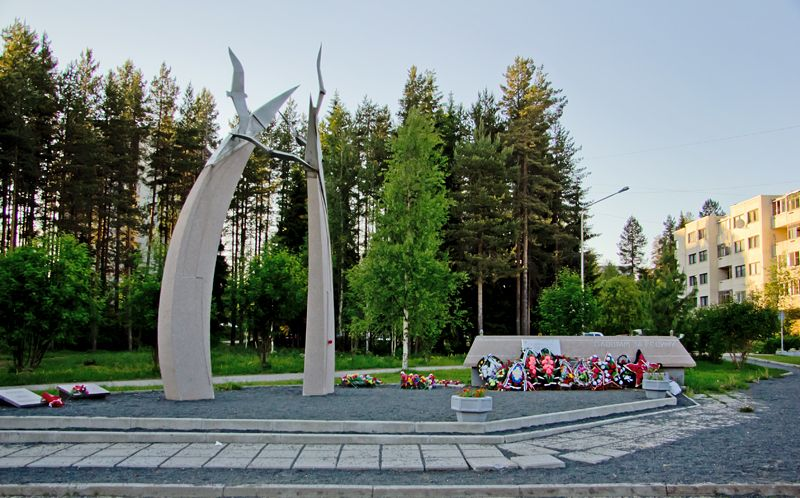

Памятник "Павшим за Родину"
Этот монумент был установлен в 1980 году в память о погибших во время Гражданской и Великой Отечественной войн, а также в Афганистане и Чечне. Монумент представляет собой две высокие стелы, одна из которых выполнена в виде засохшего дерева, а вторая изгибается к ней. На вершине монумента установлена скульптура птицы с распростертыми крыльями, символизирующая души погибших. Справа и слева от монумента расположены мемориальные доски с именами уроженцев Карелии, погибших на войне. Памятник "Павшим за Родину" – это место, где люди могут почтить память тех, кто отдал свою жизнь за свою страну.